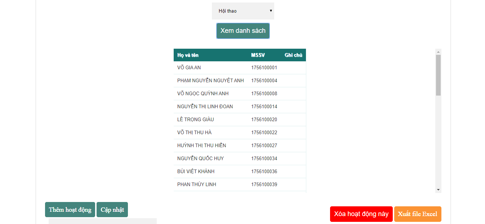
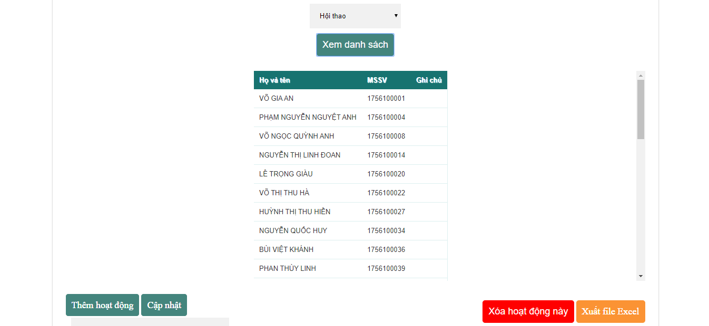

Tải tất cả file mẫu.
Hướng dẫn đổi kiểu dữ liệu theo mẫu.
Xem video hướng dẫn dùng web và cài đặt phần mềm XAMPP.
Sau khi đăng nhập sẽ hiện ra giao diện gồm các lớp đang quản lý. Nhấp vào vào biểu tượng dấu “ + ” để thêm lớp.
Sau khi nhấp vào phím thêm lớp, giao diện “Tạo lớp” sẽ hiện ra gồm các bước:
Bước 1) Nhập tên lớp. Để thoát trang, nhấp vào icon dấu “ X ”.
Bước 2) Thêm thông tin sinh viên: nhúng file excel thông tin sinh viên có từ máy tính. Nhấp chuột vào biểu tượng tải về để tải về file Excel mẫu (các bước tiếp theo cũng tương tự). Nhấp vào “Trở về” để quay về bước trước, nhấp vào “Nhúng file” để sang bước tiếp theo.
Bước 3) Thêm bảng điểm học tập: nhúng file excel bảng điểm học tập của sinh viên. Nhấp vào “Nhúng file” sau khi chọn file để sang bước tiếp theo. Nếu chưa muốn thêm bảng điểm ngay bây giờ, nhấp vào “Bỏ qua” để sang bước kế tiếp, có thể cập nhật sau khi tạo lớp xong.
Bước 4) Tải lên file excel điểm rèn luyện của sinh siên: nhúng file excel bảng điểm rèn luyện của sinh viên. Nhấp vào “Nhúng file” sau khi chọn file để sang bước tiếp theo. Nếu chưa muốn thêm bảng điểm ngay bây giờ, nhấp vào “Bỏ qua” để sang bước kế tiếp, có thể cập nhật sau khi tạo lớp xong.
Sau khi tạo lớp, lớp được tạo sẽ hiện như hình bên dưới. Nhấp vào lớp để vào trang quản lý sinh viên.
Nhấp vào biểu tượng “thùng rác” để Xóa lớp.
Tại tab “Hồ sơ sinh viên”, thầy cô nhập mã số sinh viên vào thanh tìm kiếm để xem toàn bộ hồ sơ của sinh viên.
Hồ sơ bao gồm: thông tin cá nhân và điểm của sinh viên.
Tại tab “Thông tin chung” có các chức năng như: thêm sinh viên mới, cập nhật thông tin, xóa sinh viên, sửa nhanh, xuất file excel.
Ở mỗi tab bảng dữ liệu đều có nút “Xuất file Excel”, thầy cô có thể nhấp chuột vào để tải dữ liệu trên tab về máy.
Bước 1) Nhấp vào “Thêm sinh viên mới”.
Bước 2) Nhập mã số sinh viên.
Bước 3) Nhấp vào “Thêm sinh viên” để tiến hành thêm sinh viên, nhấp vào “Đóng” để đóng form.
Bước 4) Nếu thêm thành công, hệ thống sẽ hiện thông báo “Thêm sinh viên thành công”.
Bước 1) Nhấp vào “Cập nhật thông tin” để tiến hành cập nhật.
Bước 2) Chọn file Excel muốn cập nhật.
Bước 3) Nhấp vào “Cập nhật” để cập nhật dữ liệu từ file lên bảng, nhấp vào “Đóng” để đóng form.
Sửa nhanh thông tin sinh viên bằng cách Nhấp vào “Sửa nhanh” để vào giao diện chỉnh sửa.
Bước 1) Tại giao diện sửa nhanh, nhấp vào vị trí thông tin muốn sửa và nhập nội dung.
Bước 2) Sau khi sửa xong, nhấn Enter thì thông tin chỉnh sửa sẽ được lưu lại.
Bước 3) Để xóa một sinh viên bất kì, nhập mã số sinh viên vào ô và nhấn nút “Xóa”. Hệ thống sẽ hiện thông báo xác nhận, nhấn “OK” để xóa, nhấn “Hủy” nếu không muốn xóa. Nếu xóa thành công, hệ thống sẽ báo “Đã xóa”.

Bước 4) Sau khi thực hiện xong các thao tác, nhấp vào “Xong” để quay lại giao diện quản lý.
Tại tab “Điểm học tập”, nếu bỏ qua bước nhúng bảng điểm khi tạo lớp, trang sẽ chưa có dữ liệu để hiển thị. Để thêm bảng điểm, thầy cô Nhấp vào “Cập nhật điểm”.
Tại giao diện cập nhật điểm:
Bước 1) Chọn Bảng mới để cập nhật toàn bộ bảng điểm, học kì tương ứng để cập nhật điểm một học kì.
Bước 2) Chọn file excel muốn cập nhật.
Bước 3) Nhấn “Cập nhật” để cập nhật lên bảng, nhấp “Đóng” để đóng form.
Sau khi cập nhật sẽ có giao diện như hình. Nhấp vào “Xuất file Excel” để tải danh sách về máy dưới dạng file Excel.
Tại tab “Điểm rèn luyện”, thao tác cập nhật và xuất file Excel tương tự như tab “Điểm học tập”.
Tại tab "Học bổng", thầy cô lựa chọn học kì, nhập vào số điểm để lọc ra danh sách sinh viên đạt yêu cầu. Nếu không có yêu cầu về điểm học tập hoặc điểm rèn luyện, thầy cô vui lòng nhập số "0" vào ô tương ứng (không để trống).
Sau khi lọc danh sách, nhấp vào “Xuất file Excel” để tải danh sách về máy dưới dạng file Excel.
Tại tab "Hoạt động ngoại khóa", nhấp vào “Thêm hoạt động” để tiến hành thêm hoạt động mới.
Tại giao diện thêm hoạt động, thầy cô nhập vào tên hoạt động và nhúng file Excel danh sách sinh viên tham gia hoạt động. Nhấp vào "Thêm" để thêm hoạt động, nhấp vào “Đóng” để đóng form.
Nếu thêm thành công, hệ thống sẽ báo đã thêm thành công.
Sau khi thêm hoạt động sẽ có giao diện như hình.
Bước 1) Chọn hoạt động.
Bước 2) Nhấp vào “Xem danh sách” để xem
Bước 3) Nhấp vào “Xóa hoạt động này” để xóa hoạt động đang xem.
Bước 4) Nhấp vào “Xuất file Excel” để tải danh sách về máy dưới dạng file Excel.

Bước 5) Để tải về danh sách gồm toàn bộ các hoạt động của lớp, thầy cô vui lòng Tải lại trang và nhấp chuột vào nút “Xuất tất cả hoạt động” khi chưa chọn xem danh sách.
Bước 1) Chọn hoạt động muốn cập nhật danh sách
Bước 2) Nhúng file sinh viên tham gia hoạt động.
Bước 3) Nhấp vào “Cập nhật” để cập nhật danh sách, nhấp vào “Đóng” để đóng form.
Ở trang chủ, di chuột vào tên tài khoản và nhấn Đăng xuất để đăng xuất.
Hướng dẫn đổi kiểu dữ liệu theo mẫu.
Xem video hướng dẫn dùng web và cài đặt phần mềm XAMPP.
HƯỚNG DẪN SỬ DỤNG
I. THÊM LỚP
Sau khi đăng nhập sẽ hiện ra giao diện gồm các lớp đang quản lý. Nhấp vào vào biểu tượng dấu “ + ” để thêm lớp.
Sau khi nhấp vào phím thêm lớp, giao diện “Tạo lớp” sẽ hiện ra gồm các bước:
Bước 1) Nhập tên lớp. Để thoát trang, nhấp vào icon dấu “ X ”.
Bước 2) Thêm thông tin sinh viên: nhúng file excel thông tin sinh viên có từ máy tính. Nhấp chuột vào biểu tượng tải về để tải về file Excel mẫu (các bước tiếp theo cũng tương tự). Nhấp vào “Trở về” để quay về bước trước, nhấp vào “Nhúng file” để sang bước tiếp theo.
Bước 3) Thêm bảng điểm học tập: nhúng file excel bảng điểm học tập của sinh viên. Nhấp vào “Nhúng file” sau khi chọn file để sang bước tiếp theo. Nếu chưa muốn thêm bảng điểm ngay bây giờ, nhấp vào “Bỏ qua” để sang bước kế tiếp, có thể cập nhật sau khi tạo lớp xong.
Bước 4) Tải lên file excel điểm rèn luyện của sinh siên: nhúng file excel bảng điểm rèn luyện của sinh viên. Nhấp vào “Nhúng file” sau khi chọn file để sang bước tiếp theo. Nếu chưa muốn thêm bảng điểm ngay bây giờ, nhấp vào “Bỏ qua” để sang bước kế tiếp, có thể cập nhật sau khi tạo lớp xong.
II. QUẢN LÝ LỚP
Sau khi tạo lớp, lớp được tạo sẽ hiện như hình bên dưới. Nhấp vào lớp để vào trang quản lý sinh viên.
Nhấp vào biểu tượng “thùng rác” để Xóa lớp.
1. Hồ sơ sinh viên
Tại tab “Hồ sơ sinh viên”, thầy cô nhập mã số sinh viên vào thanh tìm kiếm để xem toàn bộ hồ sơ của sinh viên.
Hồ sơ bao gồm: thông tin cá nhân và điểm của sinh viên.
2. Thông tin chung
Tại tab “Thông tin chung” có các chức năng như: thêm sinh viên mới, cập nhật thông tin, xóa sinh viên, sửa nhanh, xuất file excel.
Ở mỗi tab bảng dữ liệu đều có nút “Xuất file Excel”, thầy cô có thể nhấp chuột vào để tải dữ liệu trên tab về máy.
Thêm sinh viên mới:
Khi muốn thêm một sinh viên mới vào danh sách lớp, cần dùng chức năng 'Thêm sinh viên mới' để tạo dòng dữ liệu trước, sau đó mới dùng chức năng 'Cập nhật thông tin' để nhúng file có chứa thông tin của sinh viên đó.Bước 1) Nhấp vào “Thêm sinh viên mới”.
Bước 2) Nhập mã số sinh viên.
Bước 3) Nhấp vào “Thêm sinh viên” để tiến hành thêm sinh viên, nhấp vào “Đóng” để đóng form.
Bước 4) Nếu thêm thành công, hệ thống sẽ hiện thông báo “Thêm sinh viên thành công”.
Cập nhật thông tin sinh viên
Bước 1) Nhấp vào “Cập nhật thông tin” để tiến hành cập nhật.
Bước 2) Chọn file Excel muốn cập nhật.
Bước 3) Nhấp vào “Cập nhật” để cập nhật dữ liệu từ file lên bảng, nhấp vào “Đóng” để đóng form.
Sửa nhanh thông tin sinh viên bằng cách Nhấp vào “Sửa nhanh” để vào giao diện chỉnh sửa.
Bước 1) Tại giao diện sửa nhanh, nhấp vào vị trí thông tin muốn sửa và nhập nội dung.
Bước 2) Sau khi sửa xong, nhấn Enter thì thông tin chỉnh sửa sẽ được lưu lại.
Bước 3) Để xóa một sinh viên bất kì, nhập mã số sinh viên vào ô và nhấn nút “Xóa”. Hệ thống sẽ hiện thông báo xác nhận, nhấn “OK” để xóa, nhấn “Hủy” nếu không muốn xóa. Nếu xóa thành công, hệ thống sẽ báo “Đã xóa”.
Bước 4) Sau khi thực hiện xong các thao tác, nhấp vào “Xong” để quay lại giao diện quản lý.
3. Điểm học tập
Tại tab “Điểm học tập”, nếu bỏ qua bước nhúng bảng điểm khi tạo lớp, trang sẽ chưa có dữ liệu để hiển thị. Để thêm bảng điểm, thầy cô Nhấp vào “Cập nhật điểm”.
Tại giao diện cập nhật điểm:
Bước 1) Chọn Bảng mới để cập nhật toàn bộ bảng điểm, học kì tương ứng để cập nhật điểm một học kì.
Bước 2) Chọn file excel muốn cập nhật.
Bước 3) Nhấn “Cập nhật” để cập nhật lên bảng, nhấp “Đóng” để đóng form.
Sau khi cập nhật sẽ có giao diện như hình. Nhấp vào “Xuất file Excel” để tải danh sách về máy dưới dạng file Excel.
4. Điểm Rèn Luyện
Tại tab “Điểm rèn luyện”, thao tác cập nhật và xuất file Excel tương tự như tab “Điểm học tập”.
5. Học Bổng
Tại tab "Học bổng", thầy cô lựa chọn học kì, nhập vào số điểm để lọc ra danh sách sinh viên đạt yêu cầu. Nếu không có yêu cầu về điểm học tập hoặc điểm rèn luyện, thầy cô vui lòng nhập số "0" vào ô tương ứng (không để trống).
Sau khi lọc danh sách, nhấp vào “Xuất file Excel” để tải danh sách về máy dưới dạng file Excel.
6. Hoạt động ngoại khóa
Tại tab "Hoạt động ngoại khóa", nhấp vào “Thêm hoạt động” để tiến hành thêm hoạt động mới.
Tại giao diện thêm hoạt động, thầy cô nhập vào tên hoạt động và nhúng file Excel danh sách sinh viên tham gia hoạt động. Nhấp vào "Thêm" để thêm hoạt động, nhấp vào “Đóng” để đóng form.
Nếu thêm thành công, hệ thống sẽ báo đã thêm thành công.
Sau khi thêm hoạt động sẽ có giao diện như hình.
Xem danh sách sinh viên tham gia hoạt động:
Bước 1) Chọn hoạt động.
Bước 2) Nhấp vào “Xem danh sách” để xem
Bước 3) Nhấp vào “Xóa hoạt động này” để xóa hoạt động đang xem.
Bước 4) Nhấp vào “Xuất file Excel” để tải danh sách về máy dưới dạng file Excel.

Bước 5) Để tải về danh sách gồm toàn bộ các hoạt động của lớp, thầy cô vui lòng Tải lại trang và nhấp chuột vào nút “Xuất tất cả hoạt động” khi chưa chọn xem danh sách.
Cập nhật danh sách các sinh viên tham gia hoạt động:
Bước 1) Chọn hoạt động muốn cập nhật danh sách
Bước 2) Nhúng file sinh viên tham gia hoạt động.
Bước 3) Nhấp vào “Cập nhật” để cập nhật danh sách, nhấp vào “Đóng” để đóng form.
Ở trang chủ, di chuột vào tên tài khoản và nhấn Đăng xuất để đăng xuất.